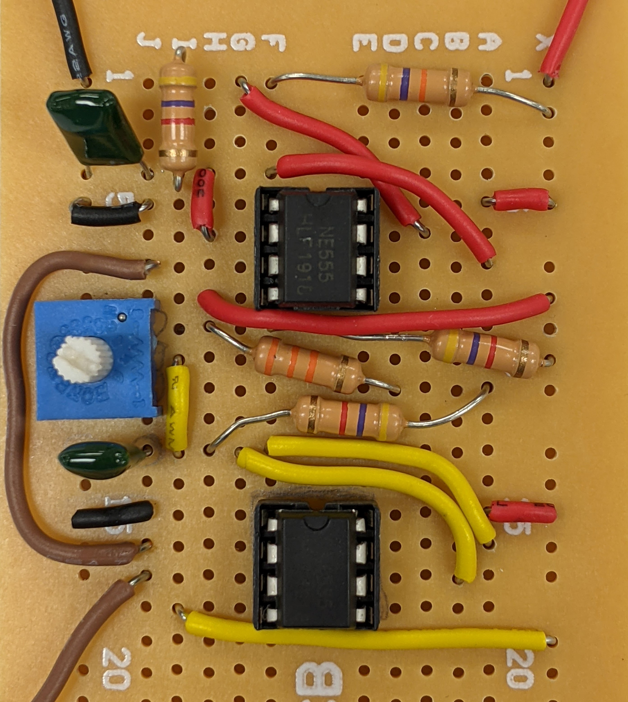

The Pulse Width Modulation project
The Pulse Width Modulation Project is to design and build the Pulse Width Modulation circuit to control the speed of a DC motor. The circuit design's main idea is to use as less space and as few wires as possible, and the circuit is organized tidily. The wires and devices are connected using soldering. I have also learned to safely use soldering tools and make effective soldering connections.
Learn more
